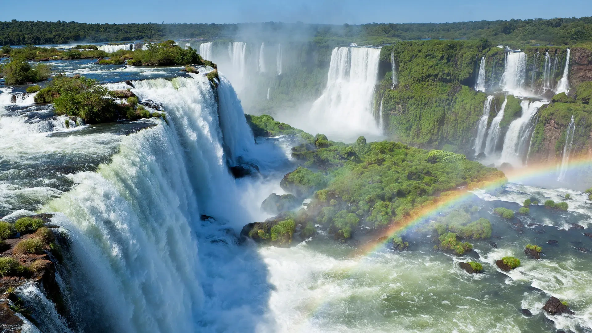
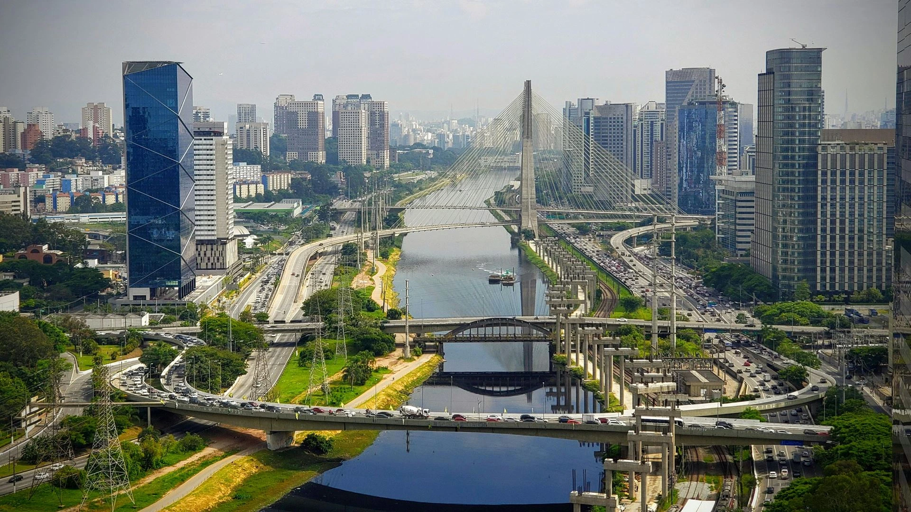

Río de Janeiro
La "Ciudad Maravillosa", famosa por el Cristo Redentor y sus playas icónicas de Copacabana e Ipanema.
La "Ciudad Maravillosa", famosa por el Cristo Redentor y sus playas icónicas de Copacabana e Ipanema.

Una de las siete maravillas naturales del mundo, situada en la frontera entre Brasil y Argentina.

El centro económico y cultural del país, conocido por su vibrante vida nocturna y museos de arte.